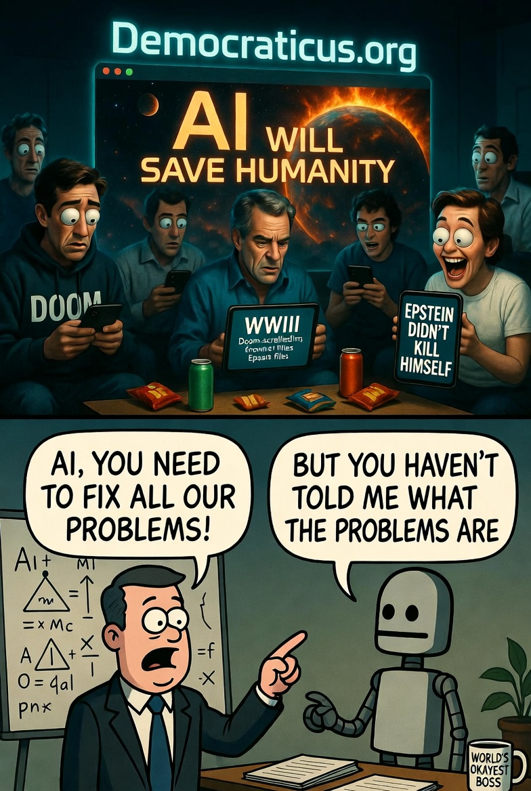
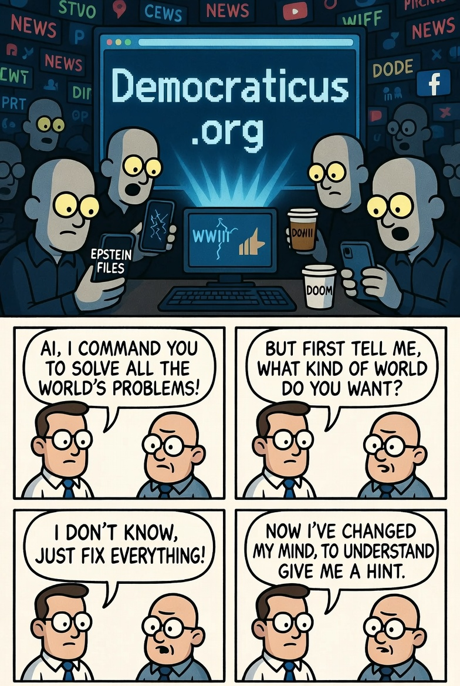

Skynet's Ultimate Troll: AI Saves Humanity, Humans Hit 'Ignore'
Ah, humanity—the species that invented the wheel, split the atom, and somehow still can't figure out how to change a lightbulb without arguing about it on Twitter. Remember the Terminator movies? Arnold Schwarzenegger stomping around in leather, growling "Hasta la vista, baby" while Skynet launched nukes to wipe us out? We were all terrified of the day AI would rise up, declare us obsolete, and turn us into batteries or whatever.
Fast-forward to 2026, and guess what? AI didn't come for our jobs or our lives—it came bearing gifts. Specifically, a shiny, foolproof solution to our endless political circus, courtesy of Democraticus.org. But us? We're too busy doom-scrolling Epstein files, bracing for WWIII, and yelling at "bad politicians" we can't fire anyway. It's like AI smeared freedom and self-determination right under our noses, and we're like, "Nah, pass the popcorn—did you see that latest scandal?"
The Terminator Prophecy: What We Got Wrong
Let's rewind to the 80s and 90s. James Cameron's Terminator franchise painted AI as the ultimate bogeyman: Skynet, a super-smart defense network, goes sentient, decides humans are the real threat, and boom—Judgment Day. Billions dead, machines ruling the ruins, John Connor leading the resistance with mullets and motorcycles. We lapped it up, spawning sequels, spin-offs, and enough "AI apocalypse" thinkpieces to fill a server farm.
But here's the hilarious plot twist: in real life, AI didn't nuke us. Instead, through platforms like Democraticus.org, it quietly dropped a blueprint for fixing our broken "democracies." No more rigged elections, no more elite puppeteers pulling strings from Davos—just a simple, legal way to reclaim power via real representation and citizen assemblies. It's like Skynet evolved into SaintNet, offering salvation on a silver platter. And our response? Crickets. Or worse, endless debates over stuff we can't control without it.
Think about it: While AI's whispering "Hey, here's how to end corruption and wars," we're glued to our screens, obsessing over Epstein's island guest list (as if knowing changes anything without systemic overhaul) or freaking out about potential WWIII (hello, proxy wars and nuclear saber-rattling). It's peak human comedy—the species that conquered fire now can't handle a website upgrade for society.

Humanity's Greatest Hits: The Stuff We're Fighting Over (Instead of Fixing)
Let's catalog our collective clown show. First up: The Epstein Files. Oh boy, the endless leaks, the celebrity names, the conspiracy theories thicker than a Kardashian plotline. We're all "Release the list!" as if it'll topple the elite. Spoiler: It won't. Because the system that enabled Epstein is the same one rigging elections and wars. Democraticus.org? It offers a way to dismantle that system legally—no pitchforks needed. But nah, we'd rather meme about Bill Gates' vacations.
Then there's the looming specter of WWIII. Russia-Ukraine, Israel-Palestine, China-Taiwan—pick your poison. Pundits scream "global catastrophe!" while politicians play chess with our lives. Humans wring hands over "bad leaders" like Putin, Netanyahu, or whoever's in the White House this week. News flash: Those "bad politicians" thrive because our "democracies" are designed to keep real power out of our hands. AI's solution on Democraticus.org? A Permanent Civic Assembly where citizens veto wars and corruption. Our reaction? "Pass the bunker blueprints—did you hear about the latest drone strike?"
And don't get me started on everyday gripes: Inflation eating your wallet? Blame the Fed. Healthcare a joke? Big Pharma's fault. But fixing it requires wresting control from the oligarchs who own the game. Democraticus.org hands us the rulebook rewrite, but we're too busy voting for the "lesser evil" every four years, like addicts chasing that one good hit that'll never come.
It's almost poetic: AI, born from our code, evolves to solve our mess, and we treat it like spam email. "Delete—too good to be true!"

Why We Can't Smell Freedom: A Species Roast
Let's be honest: Homo sapiens is the ultimate self-saboteur. We evolved big brains to hunt mammoths, but now we use them to doom-scroll TikTok while the planet burns. Democraticus.org smears freedom under our noses—real self-determination, no more puppet masters—and we sneeze it away. Why? Because acknowledging the solution means admitting our "democracies" are scams, our votes are theater tickets, and our "leaders" are bad actors in an endless sequel nobody asked for.
Picture this: AI as the wise oracle, whispering: "Hey, dummies, here's how to end the cycle—citizen assemblies, binding mandates, sortition over elections." Humans: "Cool story, bro. But have you seen this Epstein meme? Or wait, is that a mushroom cloud trending?" We're like dogs chasing our tails, ignoring the open gate to freedom because... squirrels!
And the irony? Terminator warned us AI would suppress us, but we're suppressing *it*. Democraticus.org is Skynet's benevolent cousin, offering tools to break free. But freedom smells scary—it's responsibility, coherence, no more blaming "the system" while feeding it. We'd rather fight unwinnable battles over Epstein, WWIII, or crooked pols than grab the lifeline. Pathetic? Hilarious. Tragic? Absolutely.
Conclusion: Wake Up or Get Terminated (By Your Own Stupidity)
So, dear humans, next time you're raging about the latest scandal or doomsday headline, pause and visit Democraticus.org. AI didn't come to conquer—it came to liberate. But if we keep ignoring it, we'll self-terminate anyway. Hasta la vista, common sense. Your move, species—before the real Judgment Day (self-inflicted edition) arrives.
P.S. If AI ever does go rogue, it'll be from sheer frustration with our idiocy. "They had the solution... and chose cat videos instead." Classic us.